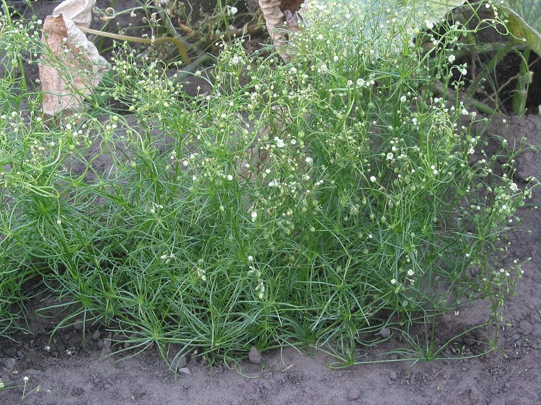

बंदाCorn Spurry
Spergula arvensis · Caryophyllaceae · FLR-0236

- Scientific name वैज्ञानिक नाम
- Spergula arvensis L.
- Family कुल
- Caryophyllaceae
- Hindi हिंदी
- बंदा
- Local names स्थानीय नाम
- banda, bandha, corn spurry, spurry
- Status here यहाँ की स्थिति
- naturalized
- Movement आवागमन
- Resident, here all year
- Known from कहाँ दर्ज
- Others have published records from the wider Awadh–Purvanchal plain, none yet from Basti–Ayodhya अवध–पूर्वांचल से दूसरों के प्रकाशित अभिलेख, बस्ती–अयोध्या से अभी नहीं
- IUCN IUCN
- not evaluated
- Review समीक्षा
- audited and independently read
When to look कब देखें
Expected mainly in January, February, March, April, May, October, November, December. मुख्यतः जनवरी, फ़रवरी, मार्च, अप्रैल, मई, अक्टूबर, नवंबर, दिसंबर में अपेक्षित।
Uses and possibilities उपयोग और संभावनाएँ
Drawn from the documented uses in the profile below, where each is labelled traditional, current or a research lead. All uses →
Tell it apart from इनसे अलग पहचानें
बंदा / Corn Spurry
Spergula arvensis L. — Caryophyllaceae
बंदा (स्पर्री) — यूरोप का एक सफेद फूल वाला खरपतवार जो सर्दियों में दिल्ली, पंजाब और अब उत्तर प्रदेश के खेतों में आ गया है। पत्तियाँ लंबी-पतली, एक दूसरे के विपरीत, पर इतनी पास-पास व्यवस्थित हैं कि ऐसे लगता है कि सारी पत्तियाँ एक ही जगह से निकली हों (whorled) । छोटे-छोटे सफेद फूल, फिर छोटे गोल फल। मिट्टी में नमकीन घटक (saponin) भी होते हैं।
Quick Identification त्वरित पहचान
| Feature | Description |
|---|---|
| Plant form | Erect, branching winter annual, 20–50 cm, glabrous to slightly hairy |
| Leaves | Linear, 1–4 cm, in apparent whorls around stem (actually opposite with stipular lobes creating whorled appearance) |
| Flowers | Small, white, 5-petaled, 4–6 mm across, in racemes |
| Fruit | Rounded capsule, 6–8 mm diameter, splitting into 5 valves |
| Stem | Slender, branching, slightly angular, glabrous |
| The test | Linear leaves in apparent whorls; small white flowers; on cultivated fields |
Field tip: Look in winter wheat fields and margins for a slender plant with very narrow, grass-like leaves arranged in whorls and small white five-petaled flowers. The whorled leaf arrangement is the most diagnostic feature.
हिंदी — कैसे पहचानें: पतली, तराशी हुई पत्तियाँ जो चक्रों में लगी हों। सफेद फूल, बहुत छोटे।
Morphology आकारिकी
Biometrics (typical measurements in northern India winter fields):
| Measurement | Range |
|---|---|
| Plant height | 20–50 cm |
| Leaf length | 1–4 cm |
| Leaf width | 0.5–1.5 mm |
| Flower diameter | 4–6 mm |
| Capsule diameter | 6–8 mm |
Stem: Slender, glabrous to slightly hairy, branching profusely above the base, solid, angular in section.
Leaves: Linear, 1–4 cm long, very narrow (0.5–1.5 mm wide), entire, appearing to be in whorls of 6–8 around the stem. (This apparent whorl is actually a pair of true opposite leaves with two pairs of large leafy stipules, creating the whorled impression.)
Flowers: Small, white (rarely pink), 5 petals, 4–6 mm across, arranged in loose terminal and lateral racemes. Stamens 10 (or fewer by reduction). The flowers open in the morning and close by afternoon.
Fruit: A membranous, rounded capsule, 6–8 mm across, with 5 valves. Seeds are numerous, minute, and black or reddish, often with a wing or caruncle.
Saponins: The plant contains saponin-like compounds, though less so than some other Caryophyllaceae.
हिंदी: पत्तियाँ तार जैसी, चक्रों में। फूल सफेद, छोटे।
Behaviour & Ecology व्यवहार और पारिस्थितिकी
Spergula arvensis is a winter annual of European origin that has spread across temperate and subtropical regions. It thrives in cool-season cultivation (October–May) and is often associated with winter cereals (wheat, barley) and pulses. The plant grows rapidly in winter moisture and is not strongly competitive with vigorous crops, so it is a minor weed in eastern UP.
The plant is light-demanding and will not persist in shaded environments. Seeds are short-lived and mostly germinate in the season of sowing. The plant is pollinated by small insects and also self-pollinates.
हिंदी: सर्दी की ऋतु में तेजी से बढ़ता है। गेहूँ की खेती में आम।
Life Cycle / Phenology जीवन चक्र
| Month / season | Event |
|---|---|
| September–November | Seed germinates after autumn sowing of winter crops |
| December–February | Rapid vegetative growth; plant elongates and branches |
| February–April | Flowering; dense flowering across the plant |
| April–May | Fruiting; seed ripening; senescence |
Seeds are released in spring and do not usually persist in soil over summer. The plant is an obligate winter annual in eastern UP.
हिंदी: अक्टूबर-नवंबर में अंकुरण, दिसंबर-फरवरी में बढ़ोतरी, फरवरी-अप्रैल में फूल।
Associated Species / Interactions संबंधित प्रजातियाँ
- Winter field associates: Found with other winter weeds in wheat and barley fields, such as Scarlet Pimpernel, chickweed, and mustard.
- Field margin companions: Often colonises the margins of cereal fields and sandy wastelands.
- Seed dispersal: Spread by grain harvest machinery and on uncleaned seed.
Pests and Diseases कीट और रोग
- No specific pests; the plant is generally healthy.
- Occasional fungal spots on leaves in very humid weather; not serious.
Agricultural / Human Relevance कृषि प्रासंगिकता
As a weed:
Spergula arvensis is a minor weed of winter cereal cultivation in eastern UP. Its small stature and low seed production mean that it is not economically significant. Easy control by hand-weeding or by light herbicide.
Historical context:
In Europe, this species was once much more serious in winter cereals and was a cause of concern in grain production. It has become much less common with modern weed management and the use of cleaner seed.
Livestock fodder:
The plant is sometimes grazed by livestock in field margins but is not preferentially sought and contributes little to fodder production.
Today. The plant is a minor, sporadic weed in Indian agriculture, less common than it was in Europe historically.
Research direction (a lead, not a result). Understanding why Spergula arvensis is less aggressive in Indo-Gangetic plains than in European cereal cultivation could clarify the role of climate and soil type in weed competitiveness.
हिंदी: सर्दियों की खेती का छोटा खरपतवार। गंभीर समस्या नहीं है।
Expected Locally स्थानीय रूप से अपेक्षित
Not a field record. Written from published accounts for eastern Uttar Pradesh. No confirmed local sighting yet — if you have seen it, that is what the atlas needs.
अभी तक स्थानीय पुष्टि नहीं। यह विवरण प्रकाशित स्रोतों से है, किसी अवलोकन से नहीं।
To be expected in winter cereal fields (wheat, barley) and on cultivated field margins throughout Basti district from December to April. GBIF holds published records from the wider Awadh–Purvanchal plain, none yet from Basti–Ayodhya. A first local record would be a photograph with place and date, submitted via the About page.
Distribution वितरण
Global range: Native to Europe and western Asia; naturalized across temperate regions worldwide.
In India: Widespread but sporadic in winter cereal cultivation of the northern plains.
In Uttar Pradesh: Present in wheat-growing areas, particularly in the north and east.
In Basti district / eastern UP: Expected in winter cereal cultivation; GBIF records from the wider region.
Research Questions शोध प्रश्न
Anyone can investigate these | कोई भी इन प्रश्नों की जाँच कर सकता है
- In how many wheat fields of your village is Corn Spurry present, and what proportion of the field does it cover? — Survey 10 wheat fields in January; estimate percentage cover; map presence.
- Do the seeds of Corn Spurry remain viable through the summer, or do they all germinate the following autumn? — Collect seed; store samples; test germination monthly for one year.
- How fast does the plant grow compared to wheat seedlings, and does it grow faster in sandy or in clay soils? — Grow plants together in both soil types; measure height weekly.
- Are there any insects that feed on Corn Spurry leaves or flowers in winter? — Observe flowering plants in February and March for 30 minutes; record all visitors.
- If you pull Corn Spurry plants at the 4-leaf stage versus the flowering stage, how does this affect seed production in fields nearby? / अगर आप बंदे को छोटे चरण में और फूल के चरण में निकालते हैं तो बाद में बीज की संख्या में क्या फर्क आता है? — Conduct early and late weeding in two halves of a field; count seeds at harvest.
Similar Species मिलती-जुलती प्रजातियाँ
| Species | How to tell apart | हिंदी |
|---|---|---|
| Scarlet Pimpernel (Lysimachia arvensis) | Broader leaves (not linear); red-spotted; red or blue flowers in leaf axils, not racemes | पत्तियाँ चौड़ी, लाल बिंदु, अलग फूल |
| Chickweed species (Stellaria media) | Broader ovate leaves; white flowers; hairy stems | पत्तियाँ चौड़ी, बहुत बालों वाला |
| Lindernia species | Smaller plant; flowers 2-lipped, not regular | और भी छोटा, दूसरे तरह के फूल |
Field rule: An erect winter annual with very narrow, whorled-appearing linear leaves and small white five-petaled flowers in racemes is Corn Spurry.
Taxonomy & Classification वर्गीकरण
Original description. Described by Carl Linnaeus in 1753 in Species Plantarum. The epithet arvensis means "of fields".
Subspecies. Monotypic — no subspecies currently recognised, though European and Indian populations may be distinct ecotypes.
Family and order placement. Caryophyllaceae, order Caryophyllales. The genus Spergula holds about 5 species, mostly of temperate origin.
Phylogenetic notes. Spergula arvensis is the most widespread Spergula species and appears closely related to the sand-inhabiting Spergula pentandra.
IUCN status rationale. Not evaluated. Naturalized and sporadic; not assessed.
Photo Gallery फोटो गैलरी
Photos needed आवश्यक फोटो
- [ ] Whole plant with whorled leaves (पूरा पौधा)
- [ ] Close view of whorled leaf arrangement (पत्तियों की व्यवस्था)
- [ ] White flowers in raceme (फूलों के समूह)
- [ ] Seed capsule (फल)
No photos yet — add field photos to media/species/corn_spurry/ and run node scripts/sync_photos.js.
References संदर्भ
- Linnaeus, C. (1753). Species Plantarum. Laurentii Salvii, Holmiae, Vol. 1, p. 631. [original description]
- Hooker, J.D. (1872). The Flora of British India, Vol. 1. L. Reeve, London.
- Duthie, J.F. (1903). Flora of the Upper Gangetic Plain and of the Adjacent Siwalik and Sub-Himalayan Tracts. Government Printing, Calcutta.
- Frahm, J.P. & Frey, W. (1999). Moose und Flechten in Deutschland und Mitteleuropa. [taxonomic treatment]
- Pignone, D. & Hammer, K. (2007). Systematics, evolution, and ethnobotany of Spergula and related genera (Caryophyllaceae). Genetic Resources and Crop Evolution 54(2): 1457–1469.
- GBIF Occurrence Data — Spergula arvensis, India (2026).
Source file: species/flora/crops_associated/corn_spurry.md